Returns a ggplot object that displays
the specification curve as proposed by speccurvessnmverse.
Note that the order of universes may not correspond to the order
in the summary table.
spec_curve(
.spec_summary,
label = "name",
order_by = c("estimate", "is_significant"),
colour_by = "is_significant",
palette_common = NULL,
pointsize = 2,
linewidth = 0.5,
spec_matrix_spacing = 10,
theme_common = ggplot2::theme_minimal(),
sep = "---"
)Arguments
- .spec_summary
A specification table created using
spec_summary().- label
If "name", uses the branch option names. If "code", display the codes used to define the branch options.
- order_by
A character vector by which the curve is sorted.
- colour_by
The name of the variable to colour the curve.
- palette_common
A character vector of colours to match the values of the variable
colour_byin the specification curve and the specification matrix. The palette must contain more colours than the number of unique values ofcolour_byvariable.- pointsize
Size of the points in the specification curve and the specification matrix.
- linewidth
Width of confidence interval lines.
- spec_matrix_spacing
A numeric for adjusting the specification matrix spacing passed to
combmatrix.label.extra_spacinginggupset::theme_combmatrix().- theme_common
A
ggplottheme to be used for both the specification curve and the specification matrix.- sep
A string used internally to create the specification matrix. The string must be distinct from all branch names, option names, and option codes. Use a different value if any of them contains the default value.
Value
a ggplot object with the specification curve plot for
the estimates passed in the spec_summary().
References
See also
Other specification curve analysis:
spec_summary()
Examples
femininity <- mutate_branch(
1 * (MasFem > 6), 1 * (MasFem > mean(MasFem))
)
y <- mutate_branch(log(alldeaths + 1), alldeaths)
intensity <- mutate_branch(
Minpressure_Updated_2014,
Category,
NDAM,
HighestWindSpeed
)
model <- formula_branch(
y ~ femininity,
y ~ femininity * intensity
)
family <- family_branch(
gaussian, poisson
)
match_poisson <- branch_condition(alldeaths, poisson)
match_gaussian <- branch_condition(log(alldeaths + 1), gaussian)
stable <- mverse(hurricane) %>%
add_mutate_branch(y, femininity, intensity) %>%
add_formula_branch(model) %>%
add_family_branch(family) %>%
add_branch_condition(match_poisson, match_gaussian) %>%
glm_mverse() %>%
spec_summary("femininity")
# default behaviour
spec_curve(stable)
 # coloring and sorting based on other variable
stable %>%
dplyr::mutate(colour_by = y_branch) %>%
spec_curve(order_by = c("estimate", "colour_by"), colour_by = "colour_by")

# Because the output is a \code{ggplot} object, you can
# further modify the asethetics of the specification curve
# using \code{ggplot2::theme()} and the specication matrix
# using \code{ggupset::theme_combmatrix()}
spec_curve(stable) +
ggplot2::labs(y = "Estimates", colour = "Significant at 0.05 level",
title = "Specification curve of femininity") +
ggplot2::theme(legend.position = "bottom") +
ggupset::theme_combmatrix(
combmatrix.label.width = ggplot2::unit(c(25, 100, 0, 0), "pt")
)

# coloring and sorting based on other variable
stable %>%
dplyr::mutate(colour_by = y_branch) %>%
spec_curve(order_by = c("estimate", "colour_by"), colour_by = "colour_by")

# Because the output is a \code{ggplot} object, you can
# further modify the asethetics of the specification curve
# using \code{ggplot2::theme()} and the specication matrix
# using \code{ggupset::theme_combmatrix()}
spec_curve(stable) +
ggplot2::labs(y = "Estimates", colour = "Significant at 0.05 level",
title = "Specification curve of femininity") +
ggplot2::theme(legend.position = "bottom") +
ggupset::theme_combmatrix(
combmatrix.label.width = ggplot2::unit(c(25, 100, 0, 0), "pt")
)
